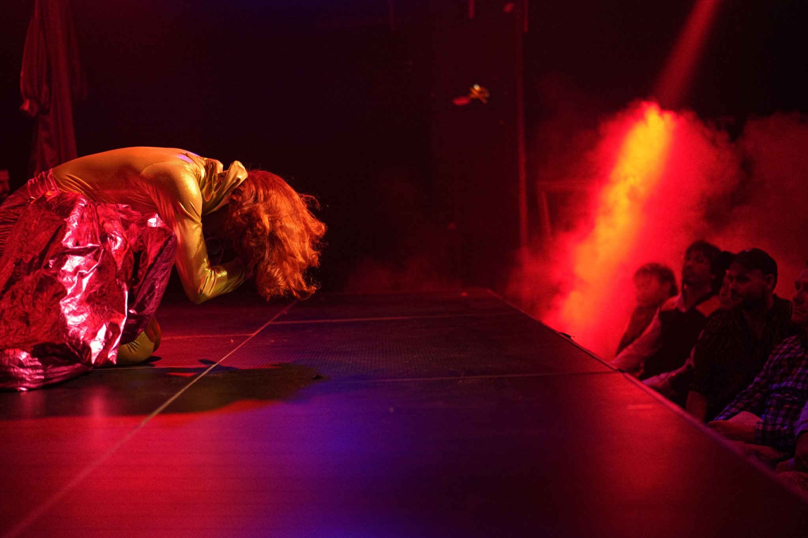
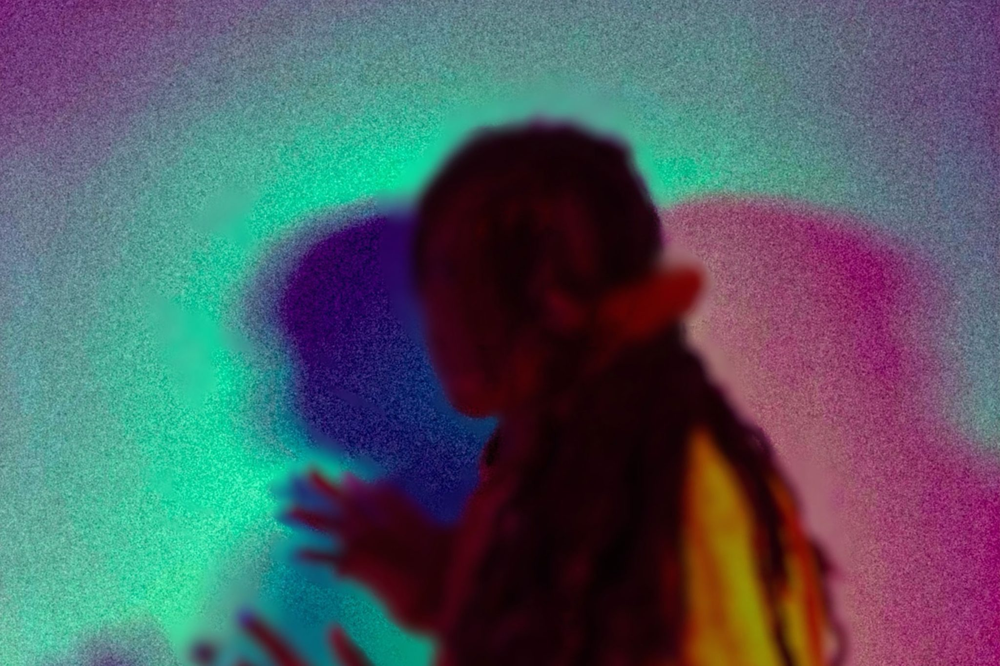

WHAT’S NEW

until Transform 23, we’re today announcing a
series of new commissions, DJ sets and immersive
encounters to deepen your experience of the
festival.

alongside Ásrún Magnúsdóttir’s SECRETS,
Transform’s Young Curators present IF WALLS
COULD TALK.